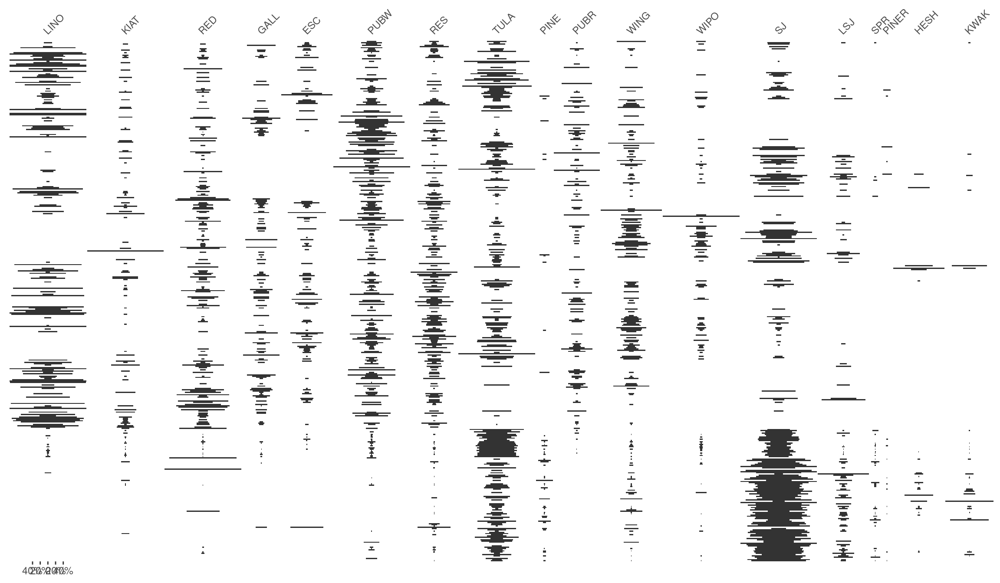
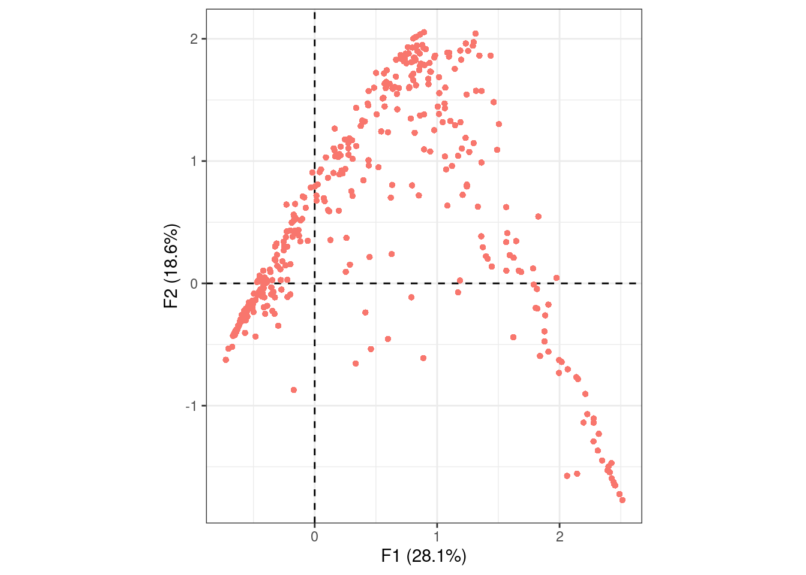
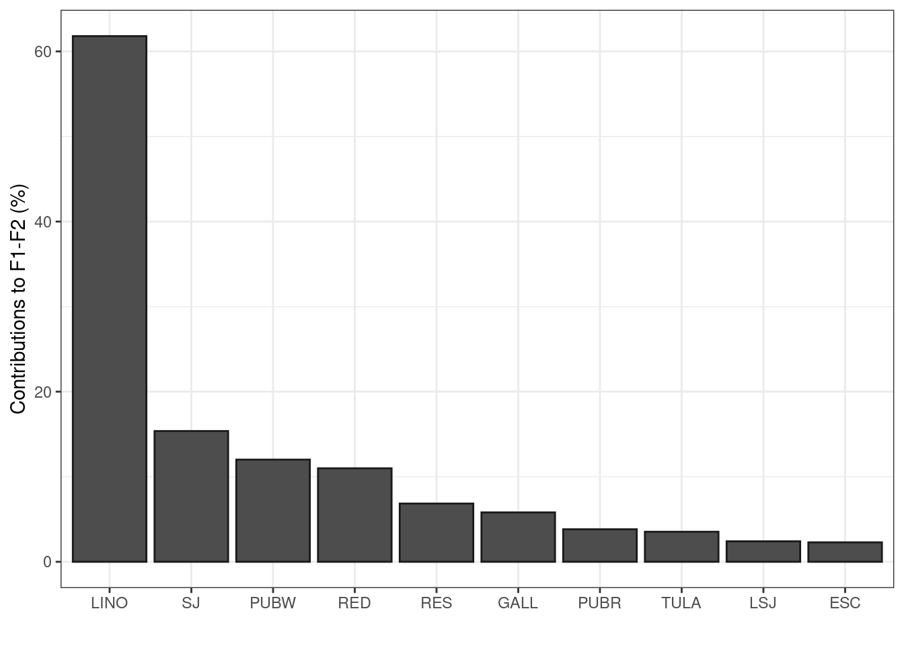
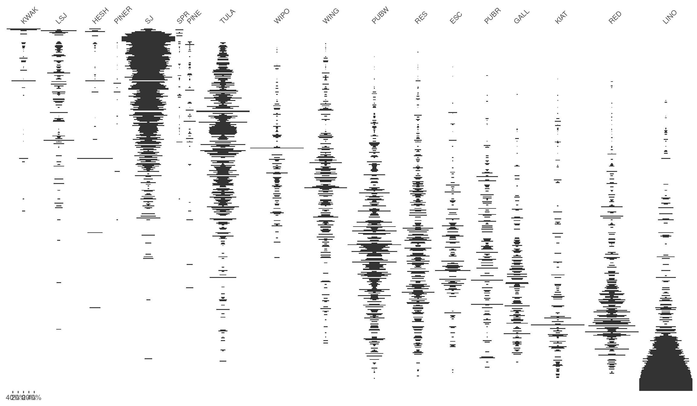

![]()
install.packages("kairos")kairos 1.1.0 is now on CRAN! kairos is a toolkit for the analysis of chronological patterns from archaeological count data.
You can install it from CRAN with:
The range of tools provided by kairos is now extended by two methods for matrix seriation, allowing the construction of relative chronologies:
The move to add these matrix seriation methods, previously implemented in tabula, follows a reorganization for consistency so that we no longer have chronology tools in two separate packages. This implies that the seriation methods are temporarily re-exported by tabula from kairos and will be removed in a future version of tabula.
- Reciprocal ranking:
seriate_rank() - Correspondence analysis:
seriate_average()
The seriate_*() methods return a permutation of the rows and columns (according to the margin argument) of a count data matrix or data.frame. Then, permute() performs the reordering.
This post briefly illustrates how to perform a correspondence analysis based seriation.
library(kairos)Correspondence Analysis (CA) is an effective method for the seriation of archaeological assemblages. The order of the rows and columns is given by the coordinates along one dimension of the CA space, assumed to account for temporal variation. The direction of temporal change within the correspondence analysis space is arbitrary: additional information is needed to determine the actual order in time.
## Load the zuni dataset
# install.packages("folio")
data("zuni", package = "folio")
## Plot the original matrix
tabula::plot_ford(zuni) +
ggplot2::theme(axis.text.y = ggplot2::element_blank())
## Get row and column permutations from CA coordinates along the first axis
indices <- seriate_average(zuni, margin = c(1, 2), axes = 1)
get_order(indices)$rows
[1] 372 387 350 367 110 417 364 407 357 160 373 406 356 344 348 384 362 378
[19] 339 383 376 386 338 419 416 408 377 392 347 371 374 351 353 402 366 375
[37] 397 363 109 395 400 389 420 155 381 412 178 382 415 368 404 172 385 361
[55] 126 352 354 360 358 343 182 414 342 86 94 403 93 410 413 396 379 388
[73] 401 108 345 176 341 315 399 113 314 369 98 321 112 179 323 87 411 365
[91] 316 359 197 115 370 253 104 289 320 174 390 327 409 332 317 391 103 355
[109] 37 418 322 318 398 194 329 335 334 325 331 326 319 394 328 156 47 100
[127] 147 173 349 290 333 340 99 153 32 88 330 157 142 38 223 17 27 405
[145] 336 26 242 116 256 159 184 158 163 255 121 83 162 96 324 148 198 228
[163] 232 97 243 40 250 150 165 31 154 35 169 1 171 54 53 229 3 263
[181] 224 247 175 164 137 246 240 39 225 212 84 238 299 230 80 9 46 2
[199] 85 257 7 234 278 233 199 111 183 29 141 57 196 92 42 166 28 22
[217] 101 380 279 283 24 45 151 68 89 41 8 144 209 61 226 239 49 52
[235] 145 248 119 82 149 5 43 48 252 210 227 245 75 152 193 77 102 74
[253] 277 237 211 73 241 222 66 249 107 292 273 130 217 208 118 117 58 393
[271] 95 251 190 65 213 244 143 204 67 64 44 132 301 136 270 177 114 4
[289] 18 287 139 91 51 195 161 236 309 131 189 201 268 180 205 135 79 187
[307] 50 146 168 266 259 62 76 81 106 235 294 214 207 105 303 254 90 185
[325] 203 15 202 281 286 14 124 272 282 284 33 140 291 271 128 127 129 167
[343] 313 170 337 285 133 298 261 125 55 346 12 63 262 295 191 310 13 70
[361] 264 219 134 71 138 258 188 216 192 312 300 296 260 72 269 36 69 288
[379] 23 6 267 280 34 302 30 181 308 123 122 304 311 186 19 218 306 10
[397] 307 200 215 120 274 305 293 206 221 276 56 21 25 78 220 231 275 297
[415] 20 59 60 16 265 11
$columns
[1] 18 14 17 16 13 15 9 8 12 11 6 7 5 10 4 2 3 1seriate_average() also contains the full results of the correspondence analysis. You can use dimensio (Frerebeau 2021) to explore these results:
## Plot CA row coordinates (get a nice arch effect!)
dimensio::plot_rows(indices) +
ggplot2::theme_bw() +
ggplot2::theme(legend.position = "none")
## Plot column contributions to the first two axes
dimensio::plot_contributions(indices, margin = 2, axes = c(1, 2)) +
ggplot2::theme_bw()

If the results of the correspondence analysis are satisfactory, we can then permute the rows and columns of the initial data matrix:
## Permute rows and columns
permuted <- permute(zuni, indices)
## Plot permuted matrix
tabula::plot_ford(permuted) +
ggplot2::theme(axis.text.y = ggplot2::element_blank())
References
Frerebeau, Nicolas. 2021. Dimensio: Multivariate Data Analysis. https://CRAN.R-project.org/package=dimensio.
———. 2022a. Folio: Datasets for Teaching Archaeology and Paleontology. https://CRAN.R-project.org/package=folio.
———. 2022b. Kairos: Analysis of Chronological Patterns from Archaeological Count Data. https://CRAN.R-project.org/package=kairos.
———. 2022c. Tabula: Analysis and Visualization of Archaeological Count Data. https://CRAN.R-project.org/package=tabula.
Wickham, Hadley, Winston Chang, Lionel Henry, Thomas Lin Pedersen, Kohske Takahashi, Claus Wilke, Kara Woo, Hiroaki Yutani, and Dewey Dunnington. 2022. Ggplot2: Create Elegant Data Visualisations Using the Grammar of Graphics. https://CRAN.R-project.org/package=ggplot2.
Reuse
Citation
BibTeX citation:
@online{frerebeau2022,
author = {Nicolas Frerebeau},
editor = {},
title = {Kairos 1.1.0},
date = {2022-06-18},
url = {https://www.tesselle.org/posts/2022-06-18-kairos-110},
langid = {en}
}
For attribution, please cite this work as:
Nicolas Frerebeau. 2022. “Kairos 1.1.0.” June 18, 2022. https://www.tesselle.org/posts/2022-06-18-kairos-110.